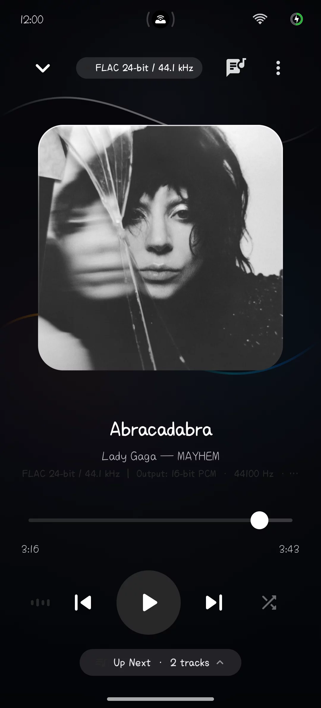
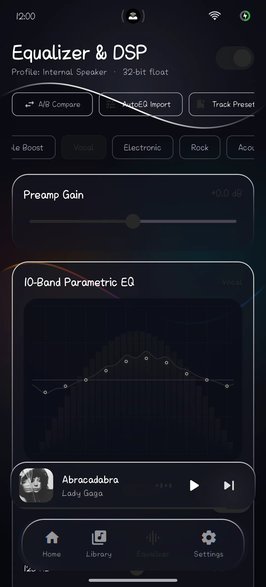
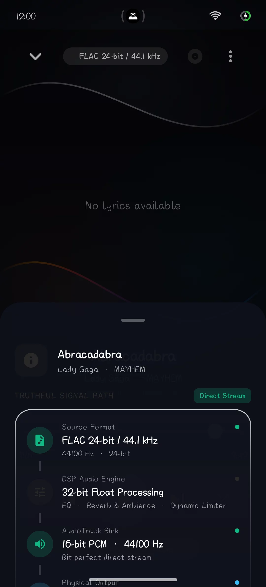
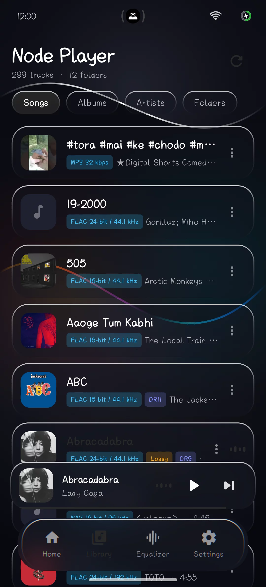
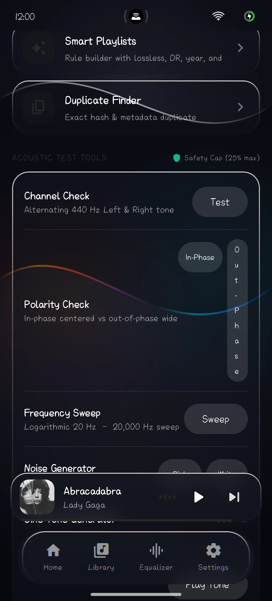
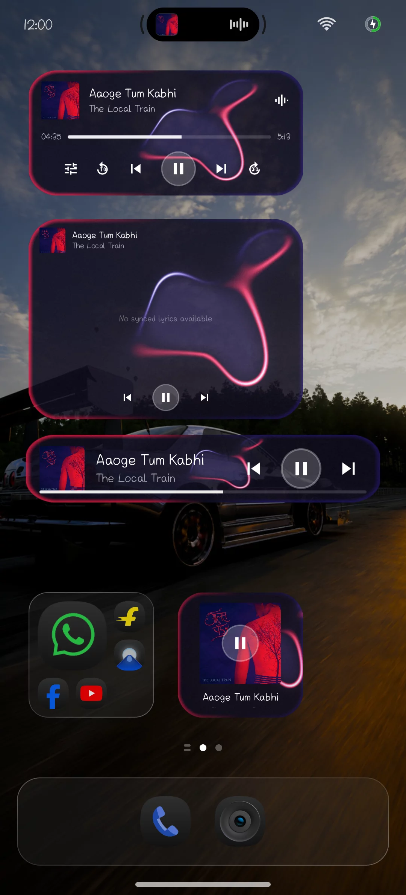
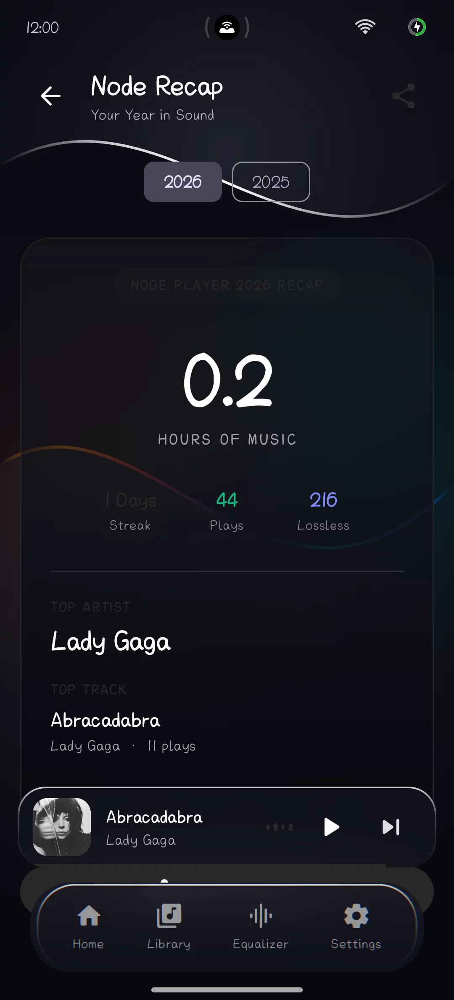

Liquid Glass.
Pure Audio.
High-fidelity local music player for Android crafted with a pure 64-bit floating point DSP pipeline, 10-band biquad EQ, and dynamic AGSL glassmorphism designed for Android 14+.
740f9db8c2f691c05fd7777a16d21bce...







Built Without Compromise
Every layer of the playback pipeline and user interface was engineered for pristine acoustic accuracy and modern visual depth.
64-Bit Float Audio Engine
ExoPlayer decoding feeds double-precision 64-bit floating point biquad IIR filters with automated gain staging to prevent clipping distortion.
AGSL Runtime Shaders
Realtime liquid glassmorphism powered by Android 13+ AGSL shaders featuring specular highlights, caustic light pulses, and chromatic refraction.
4 Home Screen Widgets
Square, Lyrics (4x3), Card, and Pill widgets with real wallpaper-reactive AGSL liquid glass and an instant draggable scrub sheet.
100% Offline & Private
Zero internet requests made by default. Zero analytics, zero ad SDKs, zero user tracking. Your library and listening habits remain strictly on-device.
Last.fm Offline Scrobbler
Authenticated scrobbler with an automatic offline queue. Scrobbles persist locally during commutes or offline mode and sync on network restore.
Hardware Verified
DSP pipeline tuned, profiled, and verified on Qualcomm Snapdragon 7+ Gen 3 (realme GT 6T / ColorOS 14) for sub-10ms buffer latencies.
10-Band Parametric Equalizer
Experience the exact frequency curve response of Node Player's biquad peaking filters. Adjust the sliders or choose a tuned preset.
Tuned Presets
Select pre-calculated acoustic curves or drag the band handles directly on the graph.
End-to-End Signal Pipeline
From source audio decoding to hardware AudioTrack output, every step preserves Bit-Perfect clarity with 64-bit headroom.
Hardware Tuned & Verified
Audio output pipeline, buffer sizes, and low-latency DSP thread priorities were hardware-verified on Qualcomm Snapdragon 7+ Gen 3 (realme GT 6T / ColorOS 14) ensuring 0 dropped frames during 120Hz UI animations.
Liquid Glass on Your Home Screen
Four distinct glanceable widgets powered by AGSL shaders that adapt organically to your wallpaper colors.
Your Music Stays Yours
In an era of invasive trackers and cloud lock-in, Node Player is architected as an offline sanctuary for your local music collection.
Zero Analytics or Telemetry
No Firebase Analytics, no Google Crashlytics, no telemetry daemons. Node Player communicates with zero reporting servers.
Local SQLite Database
Play history, smart playlists, custom EQ presets, and yearly recap statistics are saved locally in private sandbox storage.
Opt-In Network Integrations
Online LRCLIB lyrics and Last.fm scrobbling are strictly opt-in. When disabled, zero network sockets are ever opened.
Frequently Asked Questions
What makes Node Player's DSP different from standard Android players?
Standard players rely on Android's default 16-bit integer system AudioEffect chain, which often suffers from low headroom and quantization noise. Node Player intercepts audio at the decoder level and runs double-precision 64-bit floating point biquad IIR filters with automated gain staging and a soft-knee lookahead limiter directly into a 32-bit float hardware AudioTrack sink.
Does Node Player require root access or special permissions?
No. Node Player requires only standard Android Media Permissions (`READ_MEDIA_AUDIO` on Android 13+) to index your music files. No root, no Shizuku, and no accessibility services are needed.
How does the Last.fm offline scrobbler work?
Node Player connects securely to Last.fm via official session tokens. If you listen to tracks while offline or in airplane mode, qualifying scrobbles (>30s and 50% played) are stored in an encrypted local SQLite queue. The moment your device reconnects to Wi-Fi or cellular data, the queue flushes automatically.
What Android versions and hardware are supported?
Node Player is built for Android 9.0+ (API 28+). Full AGSL liquid-glass shaders and RuntimeShader caustics require Android 13+ (API 33+), with graceful fallback to frosted acrylic blur on older releases. Hardware-verified on Qualcomm Snapdragon 7+ Gen 3 (realme GT 6T / ColorOS 14).
If something looks wrong (graphics glitches or shader bugs)?
Node Player includes an automated offscreen shader self-test and hardware diagnostics engine. If you encounter rendering artifacts or GPU quirks on specific chipsets, navigate to More → Graphics Diagnostics (or Settings → Glass Shader, or long-press the app version in About). You can switch to Safe Graphics Mode immediately or generate a Diagnostics Dump (nodeplayer-diagnostics-<date>.zip) with one tap to attach to a GitHub issue. Dumps include GPU/display metrics, recent graphics events, and an in-app window screenshot—with zero personal data or file paths.
Is Node Player free and open source?
Yes. Node Player is 100% free software licensed under the GNU General Public License v3.0 (GPL-3.0). You can inspect, modify, and build the full Kotlin source code on GitHub.
Support Node Player
Node Player is 100% free, open source, and will never have ads, trackers, or locked features. If you love the music player and sound fidelity, voluntary support helps keep independent development active.
Scan to Support via UPI
Works with GPay, PhonePe, Paytm, BHIM, Cred & bank apps